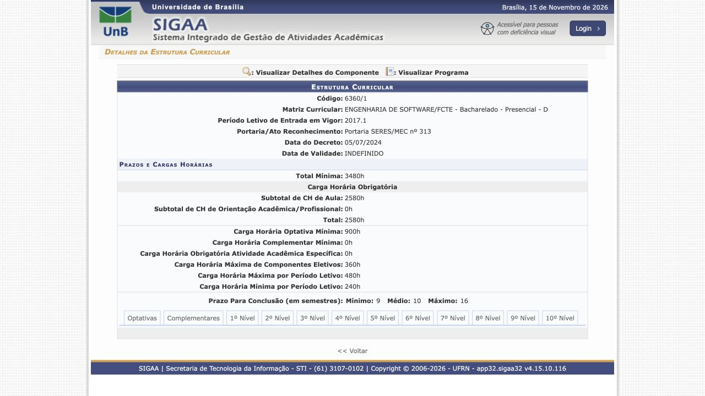
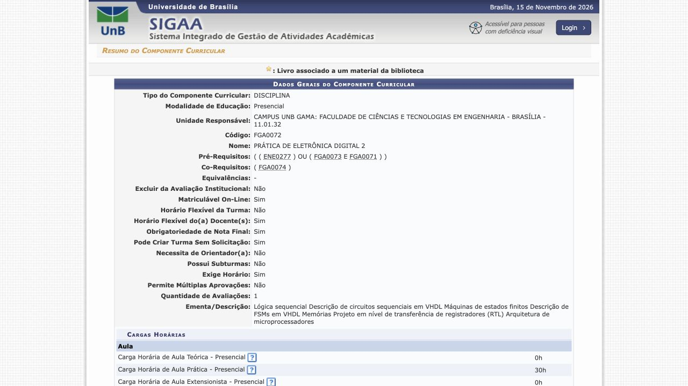
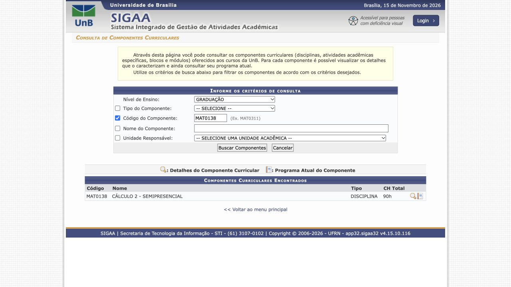

Referências para os testes funcionais¶
1. Matriz de referência¶
Foi conferida a estrutura 6360/1 — 2017.1, no SIGAA público, em 15/11. Na lista, escolher 6360/1 e Visualizar Estrutura Curricular. A matriz estar inativa para novos ingressos não invalida seu uso como recorte da avaliação.
Tabela 1 — Matriz de referência.
| Regra | Valor conferido |
|---|---|
| Carga total mínima | 3.480h |
| Obrigatórias | 2.580h, distribuídas em 39 componentes |
| Optativas mínimas | 900h |
| Limites por período | Máximo avaliado: 480h por período |
| Componentes eletivos | Máximo de 360h |
Fonte: elaboração da equipe, conforme os registros e referências desta página.
A relação foi conferida com o relatório oficial fornecido pelo usuário, emitido em 15/11. A transcrição estruturada e o hash desse relatório ficam em testes/referencias/estrutura_6360_1.json. A lista de obrigatórias não inclui as exigências de cadeias de seletividade nem substitui as horas optativas: a CDO será julgada apenas no recorte declarado.
2. Regras consultadas no SIGAA¶
Nos detalhes da matriz, abrir o nível e selecionar Visualizar Detalhes do Componente. O endereço do resumo depende da sessão; usar o código abaixo para repetir a consulta.
Tabela 2 — Regras consultadas no SIGAA.
| Componente | Regra observada | Uso no teste |
|---|---|---|
| FGA0211 — Redes | Exige FGA0170; pré-requisito ativo desde 01/08/2019. | CT-01 e comparação de status em CT-04 |
| MAT0026 — Cálculo 2 | Exige MAT0025 ou MAT0024; expressão ativa desde 07/11/2021. | Referência complementar; não amplia o denominador de CT-01 em H0 |
| MAT0026 — Cálculo 2 | MAT0138 consta como equivalência ativa desde 07/11/2021. | Referência complementar fora das oito relações de H0 |
| IFD0173 — Física 1 Experimental | Sem pré/co-requisito exibido; há equivalências cadastradas. | Não presumir que Física 1 seja seu co-requisito |
Fonte: elaboração da equipe, conforme os registros e referências desta página.
Essas consultas verificam exemplos, não todos os pré/co-requisitos do curso. Preservar captura ou transcrição dos campos e da vigência de cada regra usada na coleta formal. A posição da disciplina no fluxograma não substitui a regra oficial.
3. Delimitação das referências¶
- Co-requisitos: par FGA0072/FGA0074 confirmado no complemento abaixo. A seleção/alocação desse par foi reportada na coleta funcional; consultar as evidências da Fase 4, sem tratá-la como repetição do piloto operacional.
- Equivalências: as oito relações de H0 definem CT-05. MAT0138/MAT0026 é referência complementar e não constitui outra entrada de teste.
- Oferta e calendário: EC-01 usa os quadros de controle OC-01 e CAL-01 da seção 7; os resultados permanecem limitados a essas referências.
- Onboarding: distinguir a representação de carga dos contratos de aceitação de C3/C4 definidos na seção 7. Não inferir uma regra curricular a partir dessas preferências.
- Optativas: conferir apenas as selecionadas para o cenário. As demais ficam fora da cobertura declarada.
O repositório de referência e o commit 87b5475 não puderam ser recuperados por consulta pública nesta preparação. Isso não comprova remoção definitiva; as conclusões atuais não dependem de suposta inspeção desse código.
Fontes complementares confirmadas em 15/11¶
Tabela 3 — Fontes complementares confirmadas em 15/11.
| Caso | Regra conferida no SIGAA | Uso |
|---|---|---|
| CT-02 | FGA0072 (30h) exige FGA0074 (60h) como co-requisito e vice-versa; ambas optativas da matriz 6360/1. Regras ativas desde 01/08/2019. | Selecionar explicitamente o par e satisfazer ENE0277 OU (FGA0073 E FGA0071) antes de gerar o plano. |
| CT-05 | MAT0138 — Cálculo 2 Semipresencial, 90h. Equivalência para MAT0026 ativa desde 01/08/2019; no cadastro de MAT0026, a expressão que lista MAT0138 está ativa desde 07/11/2021. | Consulta complementar de cadastro e vigência; fora do universo de H0. Não há comparação entre históricos. |
Fonte: elaboração da equipe, conforme os registros e referências desta página.
A busca do cadastro é reproduzível em SIGAA público → Graduação → Componentes Curriculares → código MAT0138, selecionando nível Graduação. Abrir consulta. Os detalhes da matriz são consultados pela página inicial das estruturas; URLs de detalhe dependem de sessão.
O registro é apresentado na Figura 1.

Figura 1 — Identificação, cargas e limites da matriz. Fonte: SIGAA/UnB, captura de 15/11.
O registro é apresentado na Figura 2.

Figura 2 — FGA0072 exige FGA0074. Fonte: SIGAA/UnB, captura de 15/11. A relação recíproca foi conferida nos detalhes de FGA0074.
O registro é apresentado na Figura 3.

Figura 3 — Código, nome e carga da equivalente. Fonte: SIGAA/UnB, captura de 15/11.
6. Entrada acadêmica H0¶
H0 é o histórico oficial SIGAA/UnB autorizado, emitido em 15/11/2026. O documento original fica fora do repositório; os dados mínimos estão em testes/referencias/h0_sanitizado.json e nos CSVs h0_*.csv.
H0 contém 44 registros acadêmicos: 37 aprovados e 7 matriculados, correspondentes a 42 códigos distintos. DSC0172 e FGA0413 aparecem em dois períodos diferentes e são preservadas como ocorrências separadas. Não há registro atual com status Trancado na tabela de componentes cursados/cursando.
São seis equivalências concluídas (FGA0302→FGA0161, FGA0146→FGA0147, FGA0307→FGA0184, FGA0312→FGA0138, FGA0313→FGA0172 e FGA0314→FGA0238) e duas em andamento (FGA0303→FGA0150 e FGA0315→FGA0278).
O quadro do SIGAA contém 15 disciplinas obrigatórias pendentes, totalizando 1.110h. Duas cadeias de seletividade de 60h e ENADE concluinte são exigências separadas, fora do denominador da CDO. Das 39 obrigatórias, 24 estão satisfeitas por aprovação ou equivalência concluída.
FGA0170 está matriculada em 2026.2; FGA0211 e FGA0060 estão pendentes. A anotação administrativa de trancamento de FGA0161 nas observações não representa um status atual de FGA0060.
A carga declarada é de 2.130h integralizadas e 1.350h pendentes: 1.470h/1.110h de obrigatórias e 660h/240h de optativas. Ocorrências repetidas não devem ser somadas como novas obrigações.
As declarações do SIGAA definem o resultado acadêmico esperado. Elas não demonstram o reconhecimento pelo No Fluxo: essa comparação será registrada na Fase 4.
7. Contratos de aceitação de EC-01¶
Os contratos abaixo pertencem ao cenário avaliado e complementam as consultas curriculares. Não são citações do SIGAA nem atribuições de requisitos aos mantenedores.
Tabela 4 — Contratos de aceitação de EC-01.
| Identificador | Critério do cenário | Aplicação |
|---|---|---|
| CA-C3 | Ao ativar trabalho/estágio em C0, sugerir 20 créditos em lugar de 24 | CT-06: comparar a sugestão |
| CA-C4 | Em velocidade, produzir horizonte de dois semestres futuros em lugar dos três de C0 | CT-06: comparar a saída |
| OC-01 | As dez alocações de referência têm oferta no semestre listado, exceto FGA0244, disponível apenas em 2027.1 | CT-07: uma verificação por disciplina |
| CAL-01 | O início futuro esperado é 2027.1 na consulta normal, tardia e na falha com fallback | CT-07: três condições |
Fonte: elaboração da equipe; contratos de aceitação do cenário.
O registro funcional contém as dez linhas de OC-01 e os três casos de CAL-01. As hipóteses e as metas da Fase 2 foram preservadas; contratos explícitos impedem julgar uma preferência sem definir o esperado.
Histórico de versão¶
| Membro | Contribuição | Data | Commit |
|---|---|---|---|
| Gustavo Fornaciari | Registro das fontes curriculares e das pendências por regra | 15/11 | aa0c61f |
| Gustavo Fornaciari | Confirmação de co-requisitos e equivalência com capturas oficiais | 15/11 | 0e38da3 |
| Gabriel Mota | Vinculação das regras às equivalências e pendências observadas em H0 | 15/11 | c972eab |
| Gustavo Fornaciari | Padronização da avaliação pelo histórico oficial H0 | 15/11 | f454d2c |
| Gabriel Mota | Recuperação das observações e capturas funcionais | 15/11 | 289a2a0 |
| Gustavo Fornaciari | Alinhamento ao H0 e preservação das evidências anteriores com cobertura identificada | 15/11 | 7a74d9e |